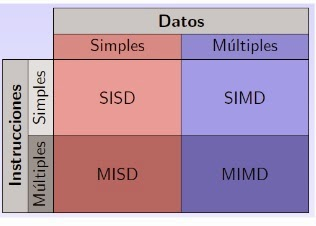

Unidad 4
4.1 Aspectos básicos de la computación paralela
Computador paralelo: Conjunto de elementos de procesos independientes que operan de una forma conjunta para resolver problemas de elevado coste computacional.
Ámbito de aplicación
- Desde la conexión de procesadores
- Hasta la conexión de computadoras
La computación paralela es una forma de cómputo en la que muchas instrucciones se ejecutan simultáneamente, operando sobre el principio de que problemas grandes, a menudo se pueden dividir en unos más pequeños, que luego son resueltos simultáneamente (en paralelo).
 Hay varias formas diferentes de computación paralela: paralelismo a nivel de bit,
paralelismo a nivel de instrucción, paralelismo de datos y paralelismo de tareas. El
paralelismo se ha empleado durante muchos años, sobre todo en la computación de altas
prestaciones, pero el interés en ella ha crecido últimamente debido a las limitaciones
físicas que impiden el aumento de la frecuencia. Como el consumo de energía —y por
consiguiente la generación de calor— de las computadoras constituye una preocupación en los
últimos años, la computación en paralelo se ha convertido en el paradigma dominante en la
arquitectura de computadores, principalmente en forma de procesadores multinúcleo.
Hay varias formas diferentes de computación paralela: paralelismo a nivel de bit,
paralelismo a nivel de instrucción, paralelismo de datos y paralelismo de tareas. El
paralelismo se ha empleado durante muchos años, sobre todo en la computación de altas
prestaciones, pero el interés en ella ha crecido últimamente debido a las limitaciones
físicas que impiden el aumento de la frecuencia. Como el consumo de energía —y por
consiguiente la generación de calor— de las computadoras constituye una preocupación en los
últimos años, la computación en paralelo se ha convertido en el paradigma dominante en la
arquitectura de computadores, principalmente en forma de procesadores multinúcleo.
4.2 Tipos de computación paralela
Paralelismo a nivel de bit
Desde el advenimiento de la integración a gran escala (VLSI) como tecnología de fabricación de chips de computadora en la década de 1970 hasta alrededor de 1986, la aceleración en la arquitectura de computadores se lograba en gran medida duplicando el tamaño de la palabra en la computadora, la cantidad de información que el procesador puede manejar por ciclo.
El aumento del tamaño de la palabra reduce el número de instrucciones que el procesador debe ejecutar para realizar una operación en variables cuyos tamaños son mayores que la longitud de la palabra. Por ejemplo, cuando un procesador de 8 bits debe sumar dos enteros de 16 bits, el procesador primero debe adicionar los 8 bits de orden inferior de cada número entero con la instrucción de adición, a continuación, añadir los 8 bits de orden superior utilizando la instrucción de adición con acarreo que tiene en cuenta el bit de acarreo de la adición de orden inferior, en este caso un procesador de 8 bits requiere dos instrucciones para completar una sola operación, en donde un procesador de 16 bits necesita una sola instrucción para poder completarla.
Históricamente, los microprocesadores de 4 bits fueron sustituidos por unos de 8 bits, luego de 16 bits y 32 bits, esta tendencia general llegó a su fin con la introducción de procesadores de 64 bits, lo que ha sido un estándar en la computación de propósito general durante la última década.
Paralelismo a nivel de instruccion
Un programa de ordenador es, en esencia, una secuencia de instrucciones ejecutadas por un procesador. Estas instrucciones pueden reordenarse y combinarse en grupos que luego son ejecutadas en paralelo sin cambiar el resultado del programa. Esto se conoce como paralelismo a nivel de instrucción. Los avances en el paralelismo a nivel de instrucción dominaron la arquitectura de computadores desde mediados de 1980 hasta mediados de la década de 1990.
Los procesadores modernos tienen ''pipeline'' de instrucciones de varias etapas. Cada etapa en el pipeline corresponde a una acción diferente que el procesador realiza en la instrucción correspondiente a la etapa; un procesador con un pipelinede N etapas puede tener hasta n instrucciones diferentes en diferentes etapas de finalización. El ejemplo canónico de un procesador segmentado es un procesador RISC, con cinco etapas: pedir instrucción, decodificar, ejecutar, acceso a la memoria y escritura. El procesador Pentium 4 tenía un pipeline de 35 etapas.
Además del paralelismo a nivel de instrucción del pipelining, algunos procesadores pueden ejecutar más de una instrucción a la vez. Estos son conocidos como procesadores superescalares. Las instrucciones pueden agruparse juntas sólo si no hay dependencia de datos entre ellas. El scoreboarding y el algoritmo de Tomasulo —que es similar a scoreboarding pero hace uso del renombre de registros— son dos de las técnicas más comunes para implementar la ejecución fuera de orden y la paralelización a nivel de instrucción.
Un pipeline canónico de cinco etapas en una máquina RISC (IF = Pedido de Instrucción, ID = Decodificación de instrucción, EX = Ejecutar, MEM = Acceso a la memoria, WB = Escritura).
Paralelismo de datos
El paralelismo de datos es el paralelismo inherente en programas con ciclos, que se centra en la distribución de los datos entre los diferentes nodos computacionales que deben tratarse en paralelo. La paralelización de ciclos conduce a menudo a secuencias similares de operaciones —no necesariamente idénticas— o funciones que se realizan en los elementos de una gran estructura de datos. Muchas de las aplicaciones científicas y de ingeniería muestran paralelismo de datos.
Una dependencia de terminación de ciclo es la dependencia de una iteración de un ciclo en la salida de una o más iteraciones anteriores. Las dependencias de terminación de ciclo evitan la paralelización de ciclos.
Un procesador superescalar con pipeline de cinco etapas, capaz de ejecutar dos instrucciones por ciclo. Puede tener dos instrucciones en cada etapa del pipeline, para un total de hasta 10 instrucciones (se muestra en verde) ejecutadas simultáneamente
Paralelismo de tareas
El paralelismo de tareas es la característica de un programa paralelo en la que cálculos completamente diferentes se pueden realizar en cualquier conjunto igual o diferente de datos. Esto contrasta con el paralelismo de datos, donde se realiza el mismo cálculo en distintos o mismos grupos de datos. El paralelismo de tareas por lo general no escala con el tamaño de un problema.
4.2.1 Clasificación
La clasificación de Flynn ha demostrado funcionar bastante bien para la tipificación de sistemas, y se ha venido usando desde décadas por la mayoría de los arquitectos de computadores. Sin embargo, los avances en tecnología y diferentes topologías, han llevado a sistemas que no son tan fáciles de clasificar dentro de los 4 tipos de Flynn. Por ejemplo, los procesadores vectoriales no encajan adecuadamente en esta clasificación, ni tampoco las arquitecturas hibridas. Para solucionar esto se han propuesto otras clasificaciones, donde los tipos SIMD y MIMD de Flynn se suelen conservar, pero que sin duda no han tenido el éxito de la de Flynn.
La figura 4.2 muestra una taxonomía ampliada que incluye alguno de los avances en arquitecturas de computadores en los últimos años. No obstante, tampoco pretende ser una caracterización completa de todas las arquitecturas paralelas existentes.
4.2.2 Arquitectura de computadoras secuenciales
Taxonomía de Flynn
 Probablemente la clasificación más popular de computadores sea la clasificación de Flynn. Esta taxónoma de las arquitecturas está basada en la clasificación atendiendo al flujo de datos e instrucciones en un sistema. Un flujo de instrucciones es el conjunto de instrucciones secuenciales que son ejecutadas por un único procesador, y un flujo de datos es el flujo secuencial de datos requeridos por el flujo de instrucciones. Con estas consideraciones, Flynn clasifica los sistemas en cuatro categorías:
SISD (Single Instruction stream, Single Data stream) Flujo único de instrucciones y flujo único de datos. Este el concepto de arquitectura serie de Von Neumann donde, en cualquier momento, sólo se está ejecutando una única instrucción. A menudo a los SISD se les conoce como computadores serie escalares. Todas las maquinas SISD poseen un registro simple que se llama contador de programa que asegura la ejecución en serie del programa. Conforme se van leyendo las instrucciones de la memoria, el contador de programa se actualiza para que apunte a la siguiente instrucción a procesar en serie. Prácticamente ningún computador puramente SISD se fabrica hoy en día ya que la mayoría de procesadores modernos incorporan algún grado de paralelizacion como es la segmentación de instrucciones o la posibilidad de lanzar dos instrucciones a un tiempo (superescalares).
MISD (Multiple Instruction stream, Single Data stream) Flujo múltiple de instrucciones y único flujo de datos. Esto significa que varias instrucciones actúan sobre el mismo y único trozo de datos. Este tipo de máquinas se pueden interpretar de dos maneras. Una es considerar la clase de máquinas que requerirían que unidades de procesamiento diferentes recibieran instrucciones distintas operando sobre los mismos datos. Esta clase de arquitectura ha sido clasificada por numerosos arquitectos de computadores como impracticable o imposible, y en estos momentos no existen ejemplos que funcionen siguiendo este modelo. Otra forma de interpretar los MISD es como una clase de máquinas donde un mismo flujo de datos fluye a través de numerosas unidades procesadoras. Arquitecturas altamente segmentadas, como los arrays sistólicos o los procesadores vectoriales, son clasificados a menudo bajo este tipo de máquinas. Las arquitecturas segmentadas, o encauzadas, realizan el procesamiento vectorial a través de una serie de etapas, cada una ejecutando una función particular produciendo un resultado intermedio. La razón por la cual dichas arquitecturas son clasificadas como MISD es que los elementos de un vector pueden ser considerados como pertenecientes al mismo dato, y todas las etapas del cauce representan múltiples instrucciones que son aplicadas sobre ese vector.
SIMD (Single Instruction stream, Multiple Data stream) Flujo de instrucción simple y flujo de datos múltiple. Esto significa que una única instrucción es aplicada sobre diferentes datos al mismo tiempo. En las máquinas de este tipo, varias unidades de procesado diferentes son invocadas por una única unidad de control. Al igual que las MISD, las SIMD soportan procesamiento vectorial (matricial) asignando cada elemento del vector a una unidad funcional diferente para procesamiento concurrente.
Por ejemplo, el cálculo de la paga para cada trabajador en una empresa, es repetir la misma operación sencilla para cada trabajador; si se dispone de una arquitectura SIMD esto se puede calcular en paralelo para cada trabajador. Por esta facilidad en la paralelizacion de vectores de datos (los trabajadores formarían un vector) se les llama también procesadores matriciales.
MIMD (Multiple Instruction stream, Multiple Data stream) Flujo de instrucciones múltiple y flujo de datos múltiple. Son máquinas que poseen varias unidades procesadoras en las cuales se pueden realizar múltiples instrucciones sobre datos diferentes de forma simultánea. Las MIMD son las más complejas, pero son también las que potencialmente ofrecen una mayor eficiencia en la ejecución concurrente o paralela. Aquí la concurrencia implica que no sólo hay varios procesadores operando simultáneamente, sino que además hay varios programas (procesos) ejecutándose también al mismo tiempo.
4.2.3 Organización de direcciones de memoria
Para que un proceso pueda ejecutarse debe estar ubicado en la memoria principal del ordenador. Una parte del sistema operativo se va a encargar de gestionar la memoria principal, de forma que los procesos puedan residir en la memoria sin conflictos. La gestión de la memoria implica varias tareas, una de ellas es llevar un registro de qué zonas están libres (es decir, no están siendo utilizadas por ningún proceso), y qué zonas están ocupadas por qué procesos.
 Otra tarea importante surge en sistemas en los que no todos los procesos, o no todo el
código y datos de un proceso, se ubican en la memoria principal. En estos sistemas, a menudo
se debe pasar parte, o la totalidad del código y datos de un proceso, de memoria a disco, o
viceversa; siendo el sistema operativo responsable de esta tarea. De esta forma se libera al
usuario de realizar estas transferencias de información, de las cuales no es consciente.
Otra tarea importante surge en sistemas en los que no todos los procesos, o no todo el
código y datos de un proceso, se ubican en la memoria principal. En estos sistemas, a menudo
se debe pasar parte, o la totalidad del código y datos de un proceso, de memoria a disco, o
viceversa; siendo el sistema operativo responsable de esta tarea. De esta forma se libera al
usuario de realizar estas transferencias de información, de las cuales no es consciente.
Otros dos temas importantes en la gestión de la memoria son el de la carga de los programas de disco a memoria y el de la protección. Desde el momento en que varios procesos deben compartir la memoria del ordenador surge el problema de la protección. En general, se pretende que un proceso no pueda modificar las direcciones de memoria en las que no reside. Esto es así ya que en las direcciones de memoria donde no está ubicado el proceso pueden residir otros procesos, o código o estructuras de datos del S.O.
Si un proceso puede modificar indiscriminadamente la memoria, podría, por ejemplo, cambiar el valor de una dirección de memoria donde residiera una variable de otro proceso, con la consecuente ejecución incorrecta del proceso propietario de la variable. Algunos sistemas ni siquiera permiten que un proceso pueda leer las direcciones de memoria en las que no reside, con esto se consigue privacidad sobre el código y datos de los procesos. Conforme avance este tema y el siguiente se profundizará en todos estos aspectos.
4.3 Sistemas de memoria (compartida) multiprocesadores
Un multiprocesador puede verse como un computador paralelo compuesto por varios procesadores interconectados que comparten un mismo sistema de memoria.
Los sistemas multiprocesadores son arquitecturas MIMD con memoria compartida. Tienen un único espacio de direcciones para todos los procesadores y los mecanismos de comunicación se basan en el paso de mensajes desde el punto de vista del programador.
Dado que los multiprocesadores comparten diferentes módulos de memoria, pudiendo acceder a un mismo módulo varios procesadores, a los multiprocesadores también se les llama sistemas de memoria compartida. Dependiendo de la forma en que los procesadores comparten la memoria, se clasifican en sistemas multiprocesador UMA, NUMA y COMA.
Multiproceso es tradicionalmente conocido como el uso de múltiples procesos concurrentes en un sistema en lugar de un único proceso en un instante determinado. Como la multitarea que permite a múltiples procesos compartir una única CPU, múltiples CPUs pueden ser utilizados para ejecutar múltiples hilos dentro de un único proceso. El multiproceso para tareas generales es, a menudo, bastante difícil de conseguir debido a que puede haber varios programas manejando datos internos (conocido como estado o contexto) a la vez.
4.3.1 Redes de interconexión dinámica (indirecta) medio compartido conmutador
Uno de los criterios más importantes para la clasificación de las redes es el que tiene en cuenta la situación de la red en la máquina paralela, dando lugar a dos familias de redes: redes estáticas y redes dinámicas. Una red estática es una red cuya topología queda definida de manera definitiva y estable durante la construcción de la máquina paralela.
La red simplemente une los diversos elementos de acuerdo a una configuración dada. Se utiliza sobre todo en el caso de los multicomputadores para conectar los diversos procesadores que posee la máquina. Por la red sólo circulan los mensajes entre procesadores, por lo que se dice que la red presenta un acoplamiento débil. En general, en las redes estáticas se exige poca carga a la red.
Una red dinámica es una red cuya topología puede variar durante el curso de la ejecución de un programa paralelo o entre dos ejecuciones de programas. La red está constituida por elementos materiales específicos, llamados commutadores o switches.
Las redes dinámicas se utilizan sobre todo en los multiprocesadores. En este caso, la red une los procesadores a los bancos de memoria central. Cualquier acceso de un procesador a la memoria (bien sea para acceder a los datos o a las instrucciones) debe pasar a través de la red, por lo se dice que la red tiene un acoplamiento fuerte. La red debe poseer un rendimiento extremadamente bueno para no demorar demasiado a los procesadores que acceden a memoria.
4.4 Sistemas de memoria distribuida (multicomputadores)
Los sistemas de memoria distribuida o multicomputadores pueden ser de dos tipos básicos. El primer de ellos consta de un único computador con múltiples CPUs comunicadas por un bus de datos mientras que en el segundo se utilizan múltiples computadores, cada uno con su propio procesador, enlazados por una red de interconexión más o menos rápida.
Sobre los sistemas de multicomputadores de memoria distribuida, se simula memorias compartidas. Se usan los mecanismos de comunicación y sincronización de sistemas multiprocesadores.
Un clúster es un tipo de arquitectura paralela distribuida que consiste de un conjunto de computadores independientes interconectados operando de forma conjunta como único recurso computacional sin embargo, cada computador puede utilizarse de forma independiente o separada.
En esta arquitectura, el computador paralelo es esencialmente una colección de procesadores secuenciales, cada uno con su propia memoria local, que pueden trabajar conjuntamente.
- Cada nodo tiene rápido acceso a su propia memoria y acceso a la memoria de otros nodos mediante una red de comunicaciones, habitualmente una red de comunicaciones de alta velocidad.
- Los datos son intercambiados entre los nodos como mensajes a través de la red.
- Una red de ordenadores, especialmente si disponen de una interconexión de alta velocidad, puede ser vista como un multicomputador de memoria distribuida y como tal ser utilizada para resolver problemas mediante computación paralela.
4.4.1 Redes de interconexión estáticas
Las redes estáticas emplean enlaces directos fijos entre los nodos. Estos enlaces, una vez fabricado el sistema son difíciles de cambiar, por lo que la escalabilidad de estas topologías es baja. Las redes estáticas pueden utilizarse con eficiencia en los sistemas en que pueden predecirse el tipo de tráfico de comunicaciones entre sus procesadores.
Clases de redes de interconexión:
- Formación lineal: Se trata de una red unidimensional en que los nodos se conectan cada uno con el siguiente medianteN-1 enlaces formando una línea.
- Mallas y toros: Esta red de interconexión es muy utilizada en la práctica. Las redes en toro son mallas en que sus filas y columnas tienen conexiones en anillo, esto contribuye a disminuir su diámetro. Esta pequeña modificación permite convertir a las mallas en estructuras simétricas y además reduce su diámetro a la mitad.
4.5 Casos para estudio
Por numerosos motivos, el procesamiento distribuido se ha convertido en un área de gran importancia e interés dentro de la Ciencia de la Computación, produciendo profundas transformaciones en las líneas de I/D.
Interesa realizar investigación en la especificación, transformación, optimización y evaluación de algoritmos distribuidos y paralelos. Esto incluye el diseño y desarrollo de sistemas paralelos, la transformación de algoritmos secuenciales en paralelos, y las métricas de evaluación de performance sobre distintas plataformas de soporte (hardware y software). Más allá de las mejoras constantes en las arquitecturas físicas de soporte, uno de los mayores desafíos se centra en cómo aprovechar al máximo la potencia de las mismas.
Interesa realizar investigación en la especificación, transformación, optimización y evaluación de algoritmos distribuidos y paralelos. Esto incluye el diseño y desarrollo de sistemas paralelos, la transformación de algoritmos secuenciales en paralelos, y las métricas de evaluación de performance sobre distintas plataformas de soporte (hardware y software). Más allá de las mejoras constantes en las arquitecturas físicas de soporte, uno de los mayores desafíos se centra en cómo aprovechar al máximo la potencia de las mismas.
Lineas de investigación y desarrollo:
- Paralelización de algoritmos secuenciales. Diseño y optimización de algoritmos.
- Arquitecturas multicore y multithreading en multicore.
- Arquitecturas multiprocesador.
- Modelos de representación y predicción de performance de algoritmos paralelos.
- Mapping y scheduling de aplicaciones paralelas sobre distintas arquitecturas multiprocesador.
- Métricas del paralelismo. Speedup, eficiencia, rendimiento, granularidad, superlinealidad.
- Balance de carga estático y dinámico. Técnicas de balanceo de carga.
- Análisis de los problemas de migración y asignación óptima de procesos y datos a procesadores. Migración dinámica.
- Patrones de diseño de algoritmos paralelos.
- Escalabilidad de algoritmos paralelos en arquitecturas multiprocesador distribuidas.
- Implementación de soluciones sobre diferentes modelos de arquitectura homogéneas y heterogéneas (multicores, clusters, multiclusters y grid). Ajuste del modelo de software al modelo de hardware, a fin de optimizar el sistema paralelo.
- Evaluación de performance.
- Laboratorios remotos para el acceso transparente a recursos de cómputo paralelo.